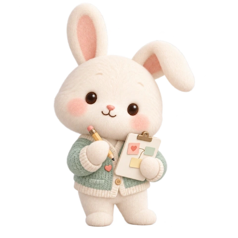

THE CARE BEHIND EVERY CONNECTION
작은 관심을 모아,
더 가까운 돌봄으로.
회원 현황을 한눈에 살펴보고,
필요한 안내와 메모를 한곳에서 관리하세요.
살펴보고,
기억하고, 이어가요.밥뭇나 관리센터
기억하고, 이어가요.밥뭇나 관리센터

THE CARE BEHIND EVERY CONNECTION
회원 현황을 한눈에 살펴보고,
필요한 안내와 메모를 한곳에서 관리하세요.
